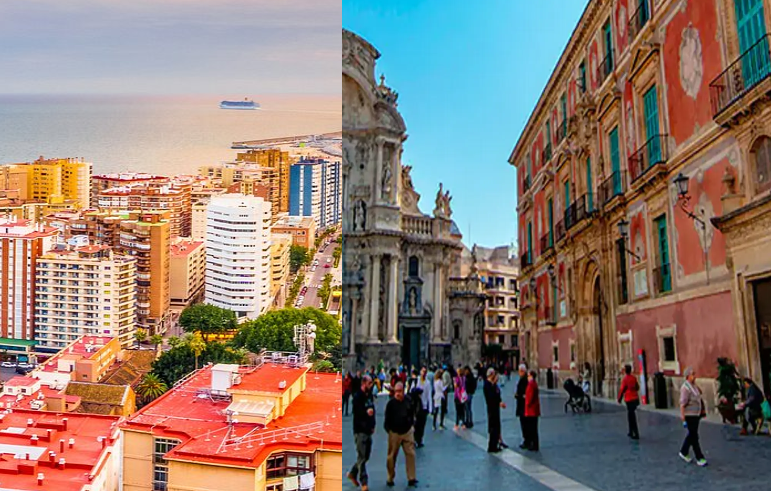
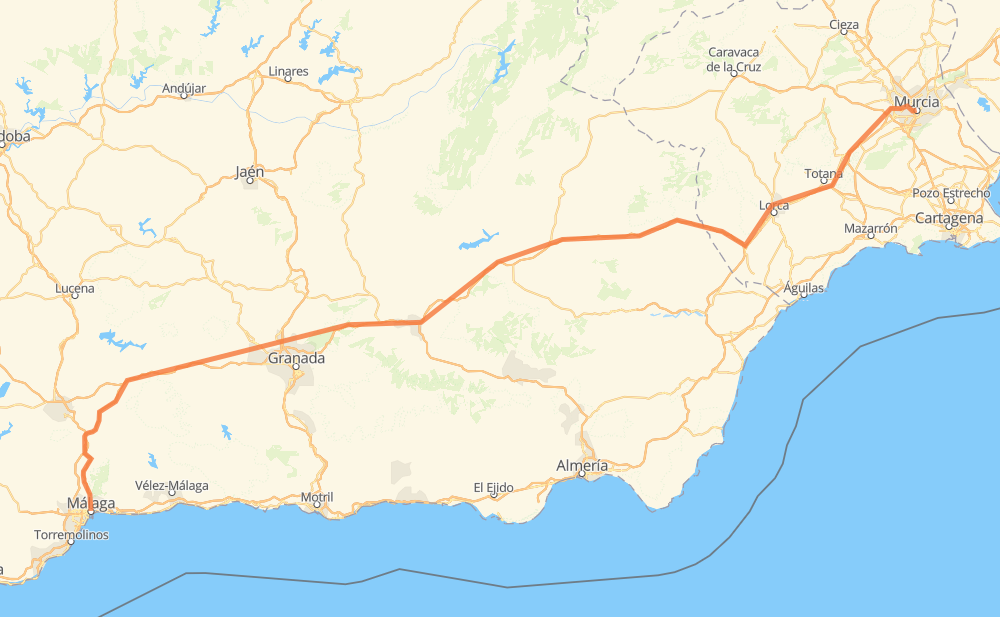

Viaje Malaga-Murcia
Murcia es una ciudad y municipio español, capital de la Región de Murcia. Es el centro de la comarca de la Huerta de Murcia y de su área metropolitana. Está situada en el sureste de la península ibérica, a orillas del río Segura, en la denominada depresión prelitoral murciana, a 40 kilómetros del mar Mediterráneo.
 